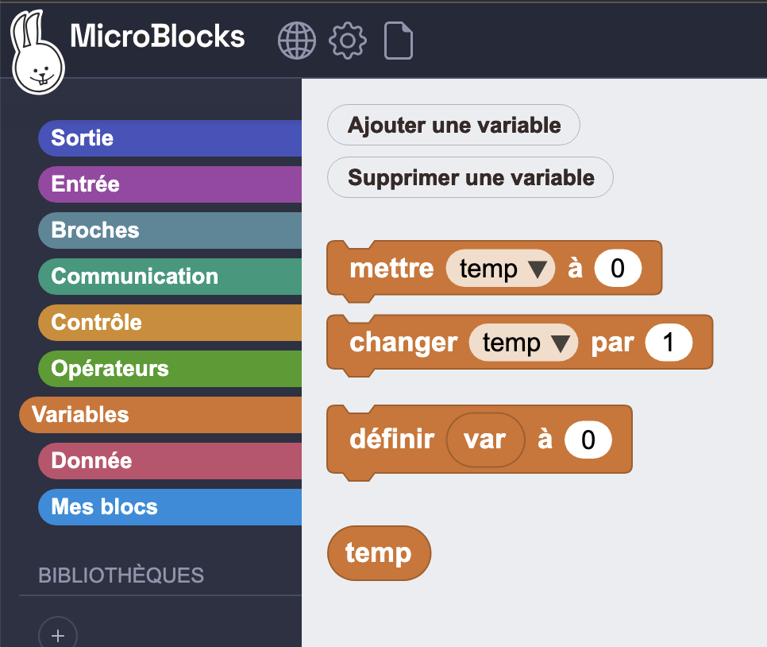
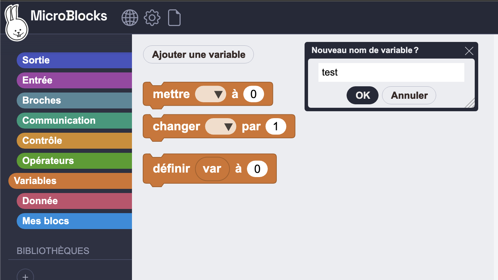
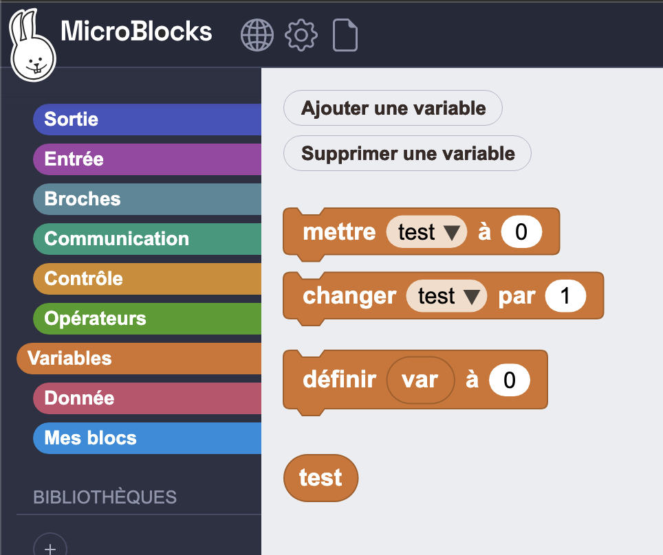

Variables

Ajouter une variable
Description
Ce bloc est en réalité un bouton. Il permet de créer une nouvelle variable globale. Si une variable portant le même nom existe déjà, la nouvelle variable sera créée en ajoutant le chiffre 2 à la fin de son nom.
Exemple : Une variable avec le nom test existe. Une autre est créée avec le même nom.
Le nom de la nouvelle variable devient test2.
Les deux images ci-dessous illustrent la création de la variable test, suivie de son apparition dans la liste des variables.
Exemple


Supprimer une variable
Description
Ce bloc est en réalité un bouton. Il n'est généralement pas visible, sauf si au moins une variable a été créée. Une fois qu'une variable existe, ce bouton est utilisé pour la supprimer.
Exemple
Les deux images ci-dessous illustrent le processus de suppression d'une variable.
Lorsque l'on clique sur le bouton SUPPRIMER UNE VARIABLE (DELETE A VARIABLE), une liste de toutes les variables globales est présentée.
Ici, la variable total est sur le point d'être supprimée : elle est sélectionnée et cliquée.
La seconde image montre l'état de l'affichage des variables avec les variables restantes.


Définir la variable (Set variable)
Description
Ce bloc est utilisé pour assigner des valeurs aux variables. Son menu de sélection affiche la liste de toutes les variables globales et locales.
Pour afficher les noms des variables locales dans le menu de sélection, ce bloc doit être attaché physiquement à la séquence de blocs où le bloc INITIALISER VARIABLE LOCALE (INITIALIZE LOCAL) est utilisé.
En plus d'afficher les noms des variables, le menu de sélection propose également une option pour ajouter une variable. Cela peut être utilisé pour ajouter des variables tout en modifiant le code du programme, sans avoir à basculer vers les options de la catégorie des variables.
Exemple
Le code d'exemple montre la création d'une variable locale var et l'attribution de la valeur 123 à la variable globale test.

Modifier la variable (Change variable)
Description
Ce bloc modifie la valeur de n'importe quelle variable, globale ou locale, de la quantité spécifiée dans la zone de saisie. La valeur de modification peut être un nombre positif ou négatif.
Exemple
Le programme modifie les valeurs des deux variables test et var.

Initialiser une variable locale (Initialize local)
Description
Ce bloc est utilisé pour créer et initialiser une variable locale. Une variable locale ne peut être utilisée que dans le script où elle apparaît et elle est réinitialisée à chaque fois que le script est exécuté ; sa valeur N'EST PAS conservée. Des variables locales portant le même nom dans des scripts différents sont totalement indépendantes les unes des autres.
Le nom par défaut de la variable var peut être modifié en cliquant sur le nom et en tapant un nouveau nom dans la boîte de dialogue qui s'ouvre.
Les blocs définir la variable ou modifier la variable peuvent être utilisés pour changer la valeur de la variable locale n'importe où dans le script.
Variables Globales vs Variables Locales
Une variable globale possède :
- Portée globale : Une variable globale peut être utilisée dans n'importe quel script qui ne possède pas de variable locale du même nom venant la masquer.
- Longue durée de vie : Une variable globale est créée explicitement et existe jusqu'à ce qu'elle soit explicitement supprimée. Elle conserve sa valeur lorsque les scripts démarrent et s'arrêtent, et même lorsqu'aucun script n'est en cours d'exécution. Cependant, cliquer sur le bouton « stop » réinitialise toutes les variables globales à la valeur zéro. Les variables globales sont également initialisées à zéro lors de leur première création et lorsqu'un projet est chargé.
En revanche, une variable locale possède :
- Portée locale : Une variable locale ne peut être utilisée que dans le script où elle apparaît. Si plusieurs scripts utilisent des variables locales portant le même nom, ces variables sont indépendantes les unes des autres.
- Durée de vie limitée : Une variable locale pour un script est créée lorsque le script démarre et supprimée lorsque le script se termine. Une nouvelle variable locale est créée et réinitialisée à chaque exécution du script ; la valeur de la variable n'est pas conservée. Si une fonction s'appelle elle-même de manière récursive, les arguments et les variables locales de chaque appel de fonction sont indépendants les uns des autres (c'est ce qui rend la récursion possible).
- Priorité sur les variables globales : Si une variable locale porte le même nom qu'une variable globale, la variable locale masque la variable globale dans le script où elle apparaît. Une variable est locale dans l'ensemble du script, peu importe l'endroit où le bloc « initialiser la variable locale
varà » apparaît (bien qu'il soit recommandé selon les bonnes pratiques de programmation de placer l'initialisation avant toute autre référence à cette variable).
Tout ce qui concerne les variables locales s'applique également aux variables de paramètres d'une fonction. Vous pouvez considérer les paramètres comme des variables locales pré-initialisées par le script appelant.
Exemple